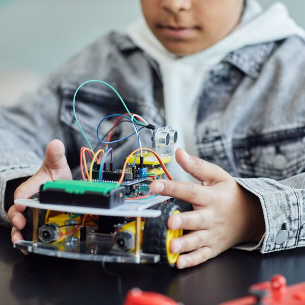
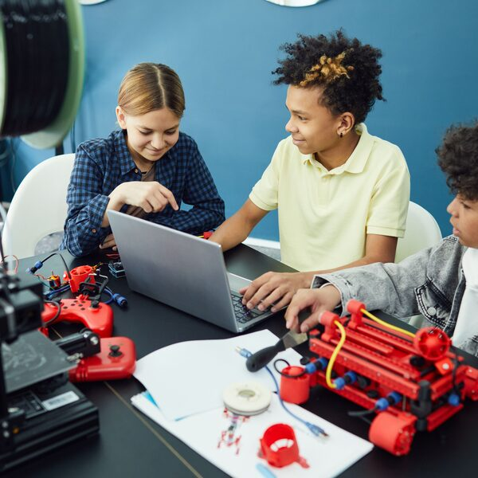
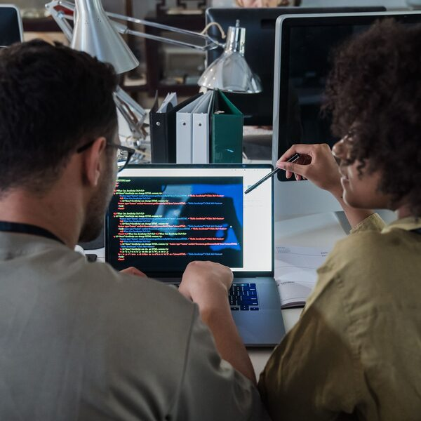

Metacognitive math puzzles
Play a puzzle, replay your own solve, and study the reasoning that got you there.



From learners making sense of ideas to the builders who make the tools.
Math through play. A well-made puzzle can carry a mathematical idea — but only because a teacher chose it, set the stage, and knows exactly what to watch for. Teachers aren't needed less here; they're needed differently — as designers of the experience and readers of the thinking.
That's the stance here. Our games don't explain the rules — students infer them. They don't grade a strategy — they show it back and ask the learner to name it. And crucially, they hand the teacher a window into that thinking: a replayable, annotatable record of how a student actually reasoned — exactly what you need to respond well. Struggle isn't a bug; it's the lesson, and the teacher is the one who frames it.
Which is also why these aren't drill in a nicer costume. Anyone can dress up procedures with animation. These make reasoning visible — deduction, elimination, working backward — so teacher and student can study the thinking together, not just check the answer.
Calcudoku · deduction
Fill the grid so every cage hits its target. The thinking it makes visible: constraint deduction — which clue forced which cell, and how you know the answer is the only one.
Play Metadoku →Delete-to-target · elimination
Delete cells so each row and column hits its target — by sum or product. The thinking it makes visible: hypothesis-testing — when you knew, when you guessed, and when you backed a choice out.
Play Metaplete →Arithmagons · inverse
Each edge is the sum of the two circles it joins — work backward to the hidden values. The thinking it makes visible: inverse reasoning — where you entered the system and how you unwound it.
Play Metagons →Infer the rules from a worked example, then solve. Every move is quietly time-stamped.
Scrub back through your own solve and attach notes at the moments that carried real reasoning.
Generate an editable, downloadable "thinking analysis" — your strategy, in your words. No data leaves the device.